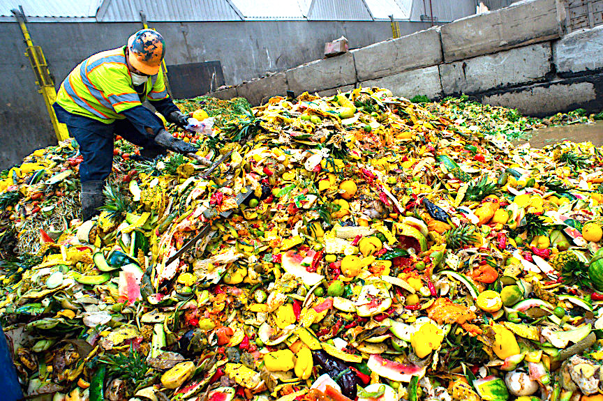
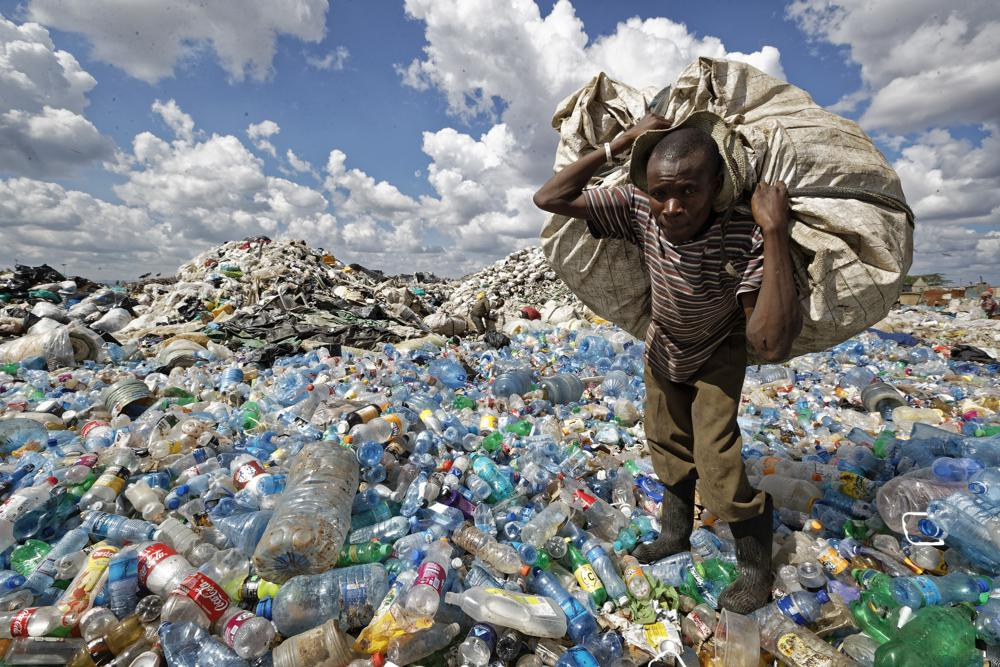
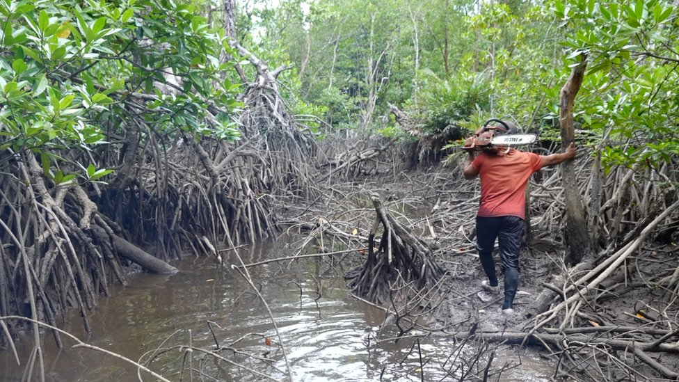

Menurut laporan United Nations Environment Programme (UNEP) yang berjudul Food Waste Index 2021. Total sampah makanan di Indonesia mencapai 20,93 juta ton per tahun, nilai tersebut menempati posisi empat terbesar. Dengan SDGs-12, limbah makanan dapat dikurangi dengan upaya kolektif dan pendorongan eco-label.
Plastik berkontribusi dalam krisis iklim atau isu perubahan iklim. Data PBB mengungkapkan bahwa 500 miliar kantong plastik digunakan setiap tahunnya, dan 1 juta botol plastik menjadi limbah plastik setiap menit. Dalam upaya mengatasi polusi plastik, SDGs ke-12 hadir untuk menguarngi penggunaan produk plastik sekali pakai. Kita pun dapat melakukan upaya seperti menggunakan tas belanja, membawa botol minum seperti tumbler, dll.
Eksploitasi Sumber Daya Alam merujuk pada pemanfaatan berlebihan atau tidak berkelanjutan terhadap sumber daya alam untuk memenuhi kebutuhan manusia, yang sering kali mengakibatkan kerusakan lingkungan dan penurunan kualitas SDA. SDGs ke-12 berperan untuk mengurangi dampak negatif eksploitasi SDA dengan mendorong penggunaan sumber daya secara efisien, mengurangi.
Tujuan Pembangunan Berkelanjutan (TPB) atau dalam bahasa Inggris Sustainable Development Goals (SDGs) 12 berfokus pada memastikan pola konsumsi dan produksi yang berkelanjutan. Tujuan dari SDGs ini antara lain; untuk mengurangi separuh limbah makanan global per kapita, mengurangi limbah dengan pencegahan, daur ulang, serta penggunaan kembali, dan mempromosikan praktik berkelanjutan (termasuk menciptakan sistem pengelolaan SDA yang lebih efisien, mengurangi limbah, dan ramah lingkungan) di seluruh sektor industri. Target utama dari SDGs ke-12 ini yaitu mengurangi limbah makanan, mengelola limbah kimia berbahaya, meningkatkan efisiensi sumber daya dalam produksi dan konsumsi, serta meningkatkan kesadaran masyarakat melalui pendidikan formal.
SDGs ini memastikan pola konsumsi dan produksi berkelanjutan, artinya mengurangi limbah, meningkatkan efisiensi penggunaan sumber daya, dan mengubah pola konsumsi masyarakat agar tidak merusak lingkungan. Sebagai negara dengan populasi besar dan kekayaan sumber daya alam yang melimpah, Indonesia ikut serta dalam mewujudkan SDGs ini.
Implementasi SDGs ke-12 dapat kita lihat juga dengan adanya kerja sama bilateral dan kolaborasi yang kuat antara Indonesia dan Suriname. Kedua negara ini memiliki akar yang kuat dalam hubungan sejarah dan budaya, contohnya dengan keberadaan diaspora Jawa di Suriname.